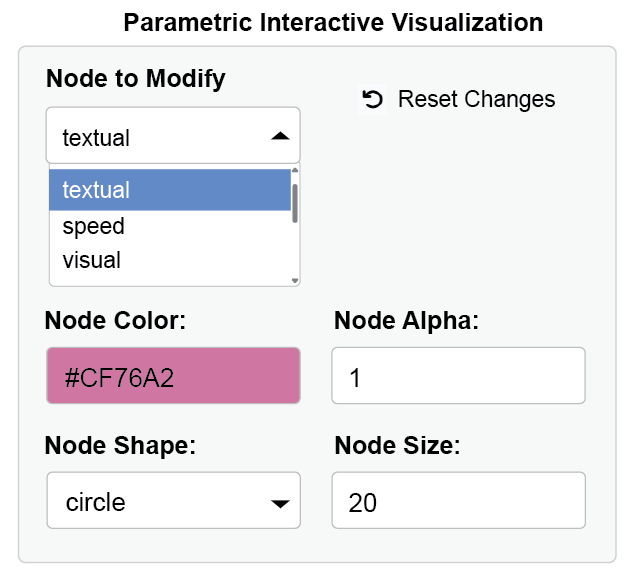
10 Integrated SEM Workflow
The ggsem package provides direct integration with multiple SEM object types, allowing you to launch the application with pre-loaded models and visualizations. Here, I demonstrate how one object can be pre-loaded before launching the app. If you are interested in pre-loading multiple objects, see the next section of the book.
Purpose of this workflow:
If you want to modify aesthetics using interactive parameter visualization (dynamic dropdown of all nodes and edges etc), then you should pre-load output objects from other packages into ggsem.
Note:
Error in plot.xy(xy.coords(x, y), type = type, ...) :
plot.new has not been called yetIf you see this error message while going through the chapter, simply type this code, which resets the plotting space:
plot.new()Here we discuss how to pre-load objects from various packages before launching the app: lavaan, semPlot, blavaan, tidySEM, lavaanPlot, OpenMx, Mplus, and semptools.
1. Loading lavaan Objects
You can directly visualize fitted structural equation models from the lavaan package by passing the fitted object to ggsem().
Step 1: Fit Your SEM Model
First, ensure you have the required packages installed and loaded:
library(ggsem)
library(lavaan)
library(semPlot)
library(blavaan)
library(lavaanPlot)# Specify and fit a CFA model
model <- '
visual =~ x1 + x2 + x3
textual =~ x4 + x5 + x6
speed =~ x7 + x8 + x9
'
fit <- sem(model, data = HolzingerSwineford1939)Step 2: Launch ggsem with the Fitted Model
Pass the fitted lavaan object to ggsem using the object parameter:
# Launch app with the lavaan model pre-loaded
ggsem(object = fit)
Important: The lavaan object must be provided to the object argument. The model argument is used only when object (visualization output, such as qgraph) is also provided.
What Happens When You Load a lavaan Object:
The SEM diagram is automatically generated and displayed
All parameter estimates are pre-calculated and visible
Model fit statistics are computed and available
The original data is preserved for further analysis
The diagram is immediately customizable
Customizing the Initial Visualization
You can control the initial appearance of your lavaan model by specifying additional parameters in the ggsem function call:
ggsem(
object = fit,
center_x = 15, # X-coordinate for diagram center
center_y = 15, # Y-coordinate for diagram center
width = 40, # Width of visualization area
height = 40 # Height of visualization area
)
2. Loading semPlot Objects
ggsem accepts semPlot objects (which inherit from the qgraph class), allowing you to import pre-configured visualizations.
Step 1: Create semPlot Object
# Create semPlot object - this is actually a qgraph object
semplot_obj <- semPaths(
fit,
layout = "tree2",
what = "paths",
whatLabels = "est",
style = "lisrel",
residuals = TRUE
)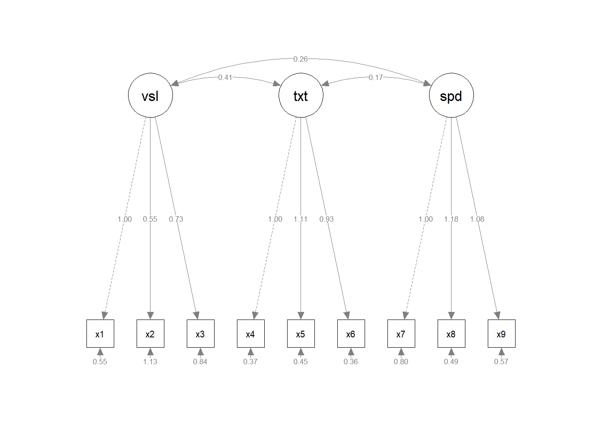
class(semplot_obj) # Returns "qgraph"[1] "qgraph"It is always better to set residuals = TRUE in semplot object that is to be pre-loaded to ggsem. If residuals = FALSE, then ggsem will not have access to information about residuals when only semPlot is pre-loaded (option B, see below). However, it can be set to FALSE when you pre-load lavaan model with semPlot object (option A, see below).
Step 2: Launch ggsem with qgraph Object
Load qgraph object using object argument in ggsem().
# Option A: With full functionality (recommended)
ggsem(object = semplot_obj, model = fit)
# Option B: Visual customization only (limited)
ggsem(object = semplot_obj)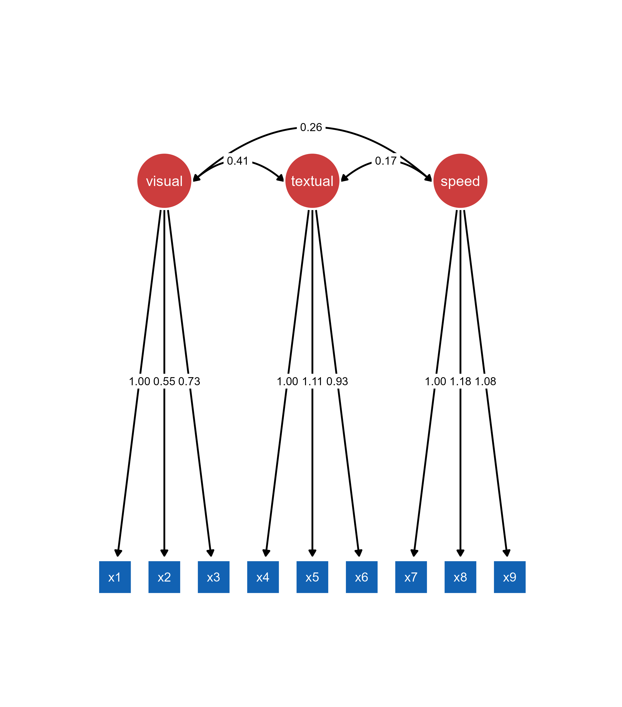
Important: The object argument must contain the semPaths plot. model argument can contain the original lavaan model for full functionality (optional).
Understanding qgraph Object Limitations: When loading a qgraph object without the original lavaan model, ggsem can only access the visual representation, not the underlying statistical model. Missing edge labels in the original qgraph object will remain missing.
3. Loading blavaan Objects
ggsem seamlessly integrates with blavaan objects for Bayesian structural equation modeling, providing access to posterior distributions and Bayesian fit statistics.
Step 1: Fit Your Bayesian SEM
# Fit the Bayesian SEM model
fit_bayes <- bsem(model, data = HolzingerSwineford1939)
SAMPLING FOR MODEL 'stanmarg' NOW (CHAIN 1).
Chain 1:
Chain 1: Gradient evaluation took 0.000336 seconds
Chain 1: 1000 transitions using 10 leapfrog steps per transition would take 3.36 seconds.
Chain 1: Adjust your expectations accordingly!
Chain 1:
Chain 1:
Chain 1: Iteration: 1 / 1500 [ 0%] (Warmup)
Chain 1: Iteration: 150 / 1500 [ 10%] (Warmup)
Chain 1: Iteration: 300 / 1500 [ 20%] (Warmup)
Chain 1: Iteration: 450 / 1500 [ 30%] (Warmup)
Chain 1: Iteration: 501 / 1500 [ 33%] (Sampling)
Chain 1: Iteration: 650 / 1500 [ 43%] (Sampling)
Chain 1: Iteration: 800 / 1500 [ 53%] (Sampling)
Chain 1: Iteration: 950 / 1500 [ 63%] (Sampling)
Chain 1: Iteration: 1100 / 1500 [ 73%] (Sampling)
Chain 1: Iteration: 1250 / 1500 [ 83%] (Sampling)
Chain 1: Iteration: 1400 / 1500 [ 93%] (Sampling)
Chain 1: Iteration: 1500 / 1500 [100%] (Sampling)
Chain 1:
Chain 1: Elapsed Time: 1.589 seconds (Warm-up)
Chain 1: 2.428 seconds (Sampling)
Chain 1: 4.017 seconds (Total)
Chain 1:
SAMPLING FOR MODEL 'stanmarg' NOW (CHAIN 2).
Chain 2:
Chain 2: Gradient evaluation took 0.000157 seconds
Chain 2: 1000 transitions using 10 leapfrog steps per transition would take 1.57 seconds.
Chain 2: Adjust your expectations accordingly!
Chain 2:
Chain 2:
Chain 2: Iteration: 1 / 1500 [ 0%] (Warmup)
Chain 2: Iteration: 150 / 1500 [ 10%] (Warmup)
Chain 2: Iteration: 300 / 1500 [ 20%] (Warmup)
Chain 2: Iteration: 450 / 1500 [ 30%] (Warmup)
Chain 2: Iteration: 501 / 1500 [ 33%] (Sampling)
Chain 2: Iteration: 650 / 1500 [ 43%] (Sampling)
Chain 2: Iteration: 800 / 1500 [ 53%] (Sampling)
Chain 2: Iteration: 950 / 1500 [ 63%] (Sampling)
Chain 2: Iteration: 1100 / 1500 [ 73%] (Sampling)
Chain 2: Iteration: 1250 / 1500 [ 83%] (Sampling)
Chain 2: Iteration: 1400 / 1500 [ 93%] (Sampling)
Chain 2: Iteration: 1500 / 1500 [100%] (Sampling)
Chain 2:
Chain 2: Elapsed Time: 3.314 seconds (Warm-up)
Chain 2: 4.617 seconds (Sampling)
Chain 2: 7.931 seconds (Total)
Chain 2:
SAMPLING FOR MODEL 'stanmarg' NOW (CHAIN 3).
Chain 3:
Chain 3: Gradient evaluation took 0.00017 seconds
Chain 3: 1000 transitions using 10 leapfrog steps per transition would take 1.7 seconds.
Chain 3: Adjust your expectations accordingly!
Chain 3:
Chain 3:
Chain 3: Iteration: 1 / 1500 [ 0%] (Warmup)
Chain 3: Iteration: 150 / 1500 [ 10%] (Warmup)
Chain 3: Iteration: 300 / 1500 [ 20%] (Warmup)
Chain 3: Iteration: 450 / 1500 [ 30%] (Warmup)
Chain 3: Iteration: 501 / 1500 [ 33%] (Sampling)
Chain 3: Iteration: 650 / 1500 [ 43%] (Sampling)
Chain 3: Iteration: 800 / 1500 [ 53%] (Sampling)
Chain 3: Iteration: 950 / 1500 [ 63%] (Sampling)
Chain 3: Iteration: 1100 / 1500 [ 73%] (Sampling)
Chain 3: Iteration: 1250 / 1500 [ 83%] (Sampling)
Chain 3: Iteration: 1400 / 1500 [ 93%] (Sampling)
Chain 3: Iteration: 1500 / 1500 [100%] (Sampling)
Chain 3:
Chain 3: Elapsed Time: 1.246 seconds (Warm-up)
Chain 3: 2.219 seconds (Sampling)
Chain 3: 3.465 seconds (Total)
Chain 3: Computing post-estimation metrics (including lvs if requested)...class(fit_bayes)[1] "blavaan"
attr(,"package")
[1] "blavaan"Step 2: Optional semPaths Visualization
# Create semPaths object with Bayesian parameter estimates
sem_paths <- semPaths(fit_bayes,
what = "paths",
residuals = TRUE,
whatLabels = "par")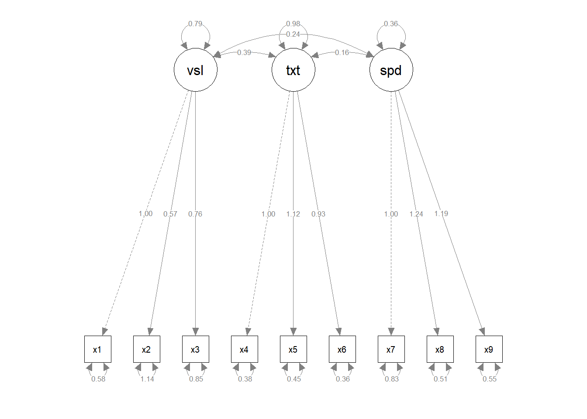
Step 3: Launch ggsem with blavaan Objects
When only blavaan class object is provided (the statistical model), then specify it as object in ggsem(). If you specify visualization output as object, then provide the model input as model argument. The qgraph output can also be pre-loaded as object without any model object.
# Option A: Direct blavaan object loading
ggsem(object = fit_bayes)
# Option B: semPaths object with blavaan model
ggsem(object = sem_paths, model = fit_bayes)
# Option C: semPaths object only (limited functionality)
ggsem(object = sem_paths)Note: Option C provides only visual customization without access to Bayesian statistical features since no model object is available.
What Happens When You Load a blavaan Object:
Bayesian SEM diagram with posterior means as parameter estimates
Access to posterior distributions and credible intervals
Bayesian fit statistics (PPP, DIC, WAIC, LOOIC)
MCMC diagnostics and convergence information
Full visual customization capabilities
Bayesian-Specific Features:
Parameter Estimates: Posterior means with credible intervals
Fit Statistics: PPP, DIC, WAIC, LOOIC instead of frequentist indices
Diagnostics: MCMC convergence information
Key Differences from lavaan Objects:
Posterior means instead of maximum likelihood estimates
Credible intervals instead of confidence intervals
Bayesian p-values (PPP) instead of frequentist p-values
Information criteria (DIC/WAIC) instead of traditional fit indices
All three object types (lavaan, semPlot/qgraph, and blavaan) can be loaded directly into ggsem using the same simple workflow: ggsem(object = your_model), with optional additional parameters for customization and, in the case of semPlot objects, the original model for full statistical functionality.
4. Loading lavaanPlotObjects
lavaanPlot generates SEM diagrams from lavaan models using DiagrammeR, providing customizable node and edge styling. The package creates grViz objects that can be imported into ggsem for interactive parameter visualization.
Unlike the above three, when pre-loading lavaanPlot, you need both object and model.
Step 1: Create lavaanPlot Visualization
library(lavaanPlot)
lavaanplot_obj <- lavaanPlot(
model = fit,
node_options = list(shape = "box", alpha = 0.5),
edge_options = list(color = "gray"),
coefs = TRUE
)
class(lavaanplot_obj) # "grViz" "htmlwidget"[1] "grViz" "htmlwidget"lavaanplot_objStep 2: Launch ggsem with lavaanPlot Object
The plot generated with lavaanPlot is grViz class, and it should be loaded as object, while its statistical model that has been used to create the grViz object is specified as model in ggsem().
# Load with both lavaanPlot visualization and lavaan model
ggsem(object = lavaanplot_obj, model = fit, width = 35, height = 35)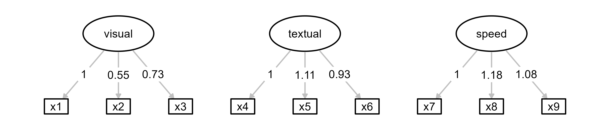
So far, only rectangles and ovals are faithfully transferred from lavaanPlot to ggsem.
Important Requirements
Required Parameters: Both object (lavaanPlot visualization) and model (original lavaan model) must be provided.
Layout Preservation: lavaanPlot layouts are fixed in ggsem. The “Custom” layout option will be selected, but layout algorithms cannot be applied.
Rendering Differences: Visual elements may differ slightly due to the transition from DiagrammeR to ggplot2 rendering engines.
What ggsem Preserves:
Color schemes and styling
Node shapes and structural layout
Edge connections and path directions
Label positioning
Diagram topology
What May Differ:
Curved line curvature
Node sizes and proportions
Font rendering and spacing
Arrowhead styling
5. Loading tidySEM Objects
The ggsem package integrates with tidySEM objects, allowing you to import and customize visualizations created using tidySEM’s workflow. The prepare_graph() function produces sem_graph objects that are fully compatible with ggsem.
When pre-loading tidySEM object, you need both object and model inputs specified. sem_graph class object from tidySEM has to be specified as object in ggsem(), while model specifies a model object that has been used to draw tidySEM plot object.
Step 1: Create tidySEM Object
library(tidySEM)Warning: package 'tidySEM' was built under R version 4.4.3Registered S3 method overwritten by 'tidySEM':
method from
predict.MxModel OpenMxlibrary(lavaan)
HS.model <- '
visual =~ x1 + x2 + x3
textual =~ x4 + x5 + x6
speed =~ x7 + x8 + x9
'
fit <- sem(HS.model, data = HolzingerSwineford1939)
# Create custom layout
lay <- get_layout("visual", "", "", "", "textual", "", "speed", "", "",
"x1", "x2", "x3", "x4", "x5", "x6", "x7", "x8", "x9",
rows = 2)
# Prepare graph object
tidysem_object <- prepare_graph(model = fit, layout = lay)
plot(tidysem_object)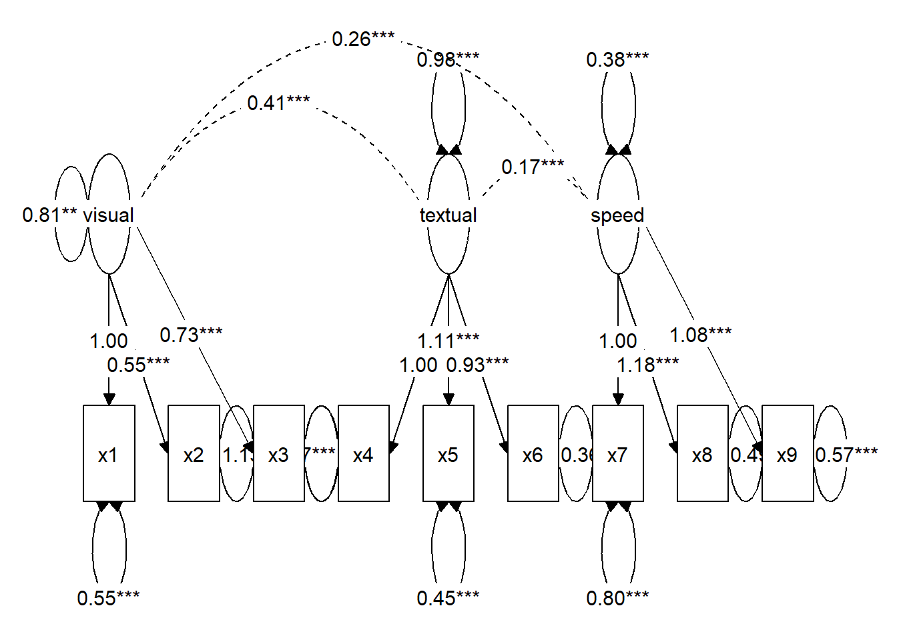
class(tidysem_object) # "sem_graph"[1] "sem_graph"Step 2: Launch ggsem with sem_graph Object
# Load the tidySEM object in ggsem
ggsem(object = tidysem_object, model = fit)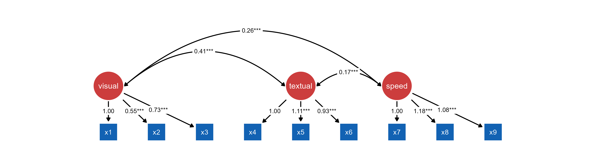
Important Notes
Layout Preservation: tidySEM layouts are fixed in ggsem. The “Custom” layout option will be selected, but layout algorithms cannot be applied.
Edge Label Preservation: tidySEM objects preserve edge labels exactly as specified, including significance notation.
What ggsem Preserves:
Complete visual structure with custom layouts
Node relationships and path diagram structure
Statistical model information
Parameter estimates and specifications
Edge labels including significance stars
What ggsem Cannot Modify:
Layout algorithm (preserved as “Custom”)
Base node positions
Overall structural arrangement
Edge label significance notation
Note: Always provide both the sem_graph object and the original lavaan (or blavaan) model.
6. Loading OpenMx Objects
The ggsem package provides integration with OpenMx models, optionally through tidySEM’s visualization workflow. You can just pre-load OpenMx model as object without plot object, or you can pre-load OpenMx model as model and tidySEM plot as object.
library(OpenMx)Warning: package 'OpenMx' was built under R version 4.4.3library(dplyr)
Attaching package: 'dplyr'The following objects are masked from 'package:stats':
filter, lagThe following objects are masked from 'package:base':
intersect, setdiff, setequal, union# Use built-in data
data(HolzingerSwineford1939, package = "lavaan")
# Simple preparation - use all data, no grouping
hs_data <- HolzingerSwineford1939 %>%
dplyr::select(-c(id, sex, ageyr, agemo, grade, school)) %>% # Remove school and other vars
na.omit()
# Single-group CFA model
cfa_model <- mxModel(
"HolzingerSwineford_CFA",
type = "RAM",
mxData(hs_data, type = "raw"),
manifestVars = paste0("x", 1:9),
latentVars = c("visual", "textual", "speed"),
# Factor loadings with labels
mxPath(from = "visual", to = c("x1", "x2", "x3"),
free = c(FALSE, TRUE, TRUE), # First loading fixed for identification
values = c(1, 0.8, 0.8),
labels = c("visual_x1", "visual_x2", "visual_x3")),
mxPath(from = "textual", to = c("x4", "x5", "x6"),
free = c(FALSE, TRUE, TRUE),
values = c(1, 0.8, 0.8),
labels = c("textual_x4", "textual_x5", "textual_x6")),
mxPath(from = "speed", to = c("x7", "x8", "x9"),
free = c(FALSE, TRUE, TRUE),
values = c(1, 0.8, 0.8),
labels = c("speed_x7", "speed_x8", "speed_x9")),
# Residual variances
mxPath(from = paste0("x", 1:9), arrows = 2, free = TRUE,
values = rep(0.5, 9),
labels = paste0("resid_x", 1:9)),
# Factor variances
mxPath(from = c("visual", "textual", "speed"), arrows = 2, free = TRUE,
values = c(1, 1, 1),
labels = c("var_visual", "var_textual", "var_speed")),
# Factor covariances
mxPath(from = "visual", to = "textual", arrows = 2, free = TRUE,
values = 0.3, labels = "cov_visual_textual"),
mxPath(from = "visual", to = "speed", arrows = 2, free = TRUE,
values = 0.2, labels = "cov_visual_speed"),
mxPath(from = "textual", to = "speed", arrows = 2, free = TRUE,
values = 0.2, labels = "cov_textual_speed"),
# Means/intercepts
mxPath(from = "one", to = paste0("x", 1:9), free = TRUE,
values = colMeans(hs_data, na.rm = TRUE),
labels = paste0("mean_x", 1:9))
)
# Fit the model
cfa_fit <- mxRun(cfa_model)Running HolzingerSwineford_CFA with 30 parameterssummary(cfa_fit)Summary of HolzingerSwineford_CFA
free parameters:
name matrix row col Estimate Std.Error A
1 visual_x2 A x2 visual 0.5535011 0.10921118
2 visual_x3 A x3 visual 0.7293714 0.11723235
3 textual_x5 A x5 textual 1.1130765 0.06498136
4 textual_x6 A x6 textual 0.9261458 0.05619111
5 speed_x8 A x8 speed 1.1799503 0.15025376
6 speed_x9 A x9 speed 1.0815303 0.19508113
7 resid_x1 S x1 x1 0.5490550 0.11901095
8 resid_x2 S x2 x2 1.1338396 0.10425397
9 resid_x3 S x3 x3 0.8443230 0.09506139
10 resid_x4 S x4 x4 0.3711727 0.04796107
11 resid_x5 S x5 x5 0.4462549 0.05793001
12 resid_x6 S x6 x6 0.3562030 0.04343945
13 resid_x7 S x7 x7 0.7993917 0.08755798
14 resid_x8 S x8 x8 0.4876975 0.09164537
15 resid_x9 S x9 x9 0.5661306 0.09056512
16 var_visual S visual visual 0.8093136 0.14969561
17 cov_visual_textual S visual textual 0.4082316 0.07966415
18 var_textual S textual textual 0.9794930 0.11219920
19 cov_visual_speed S visual speed 0.2622248 0.05537891
20 cov_textual_speed S textual speed 0.1734948 0.04931108
21 var_speed S speed speed 0.3837472 0.09204134
22 mean_x1 M 1 x1 4.9357697 0.06717776
23 mean_x2 M 1 x2 6.0880399 0.06775428
24 mean_x3 M 1 x3 2.2504153 0.06508019
25 mean_x4 M 1 x4 3.0609081 0.06698704
26 mean_x5 M 1 x5 4.3405316 0.07425801
27 mean_x6 M 1 x6 2.1855719 0.06304459
28 mean_x7 M 1 x7 4.1859021 0.06269525
29 mean_x8 M 1 x8 5.5270764 0.05826912
30 mean_x9 M 1 x9 5.3741233 0.05806980
Model Statistics:
| Parameters | Degrees of Freedom | Fit (-2lnL units)
Model: 30 2679 7475.49
Saturated: 54 2655 NA
Independence: 18 2691 NA
Number of observations/statistics: 301/2709
Information Criteria:
| df Penalty | Parameters Penalty | Sample-Size Adjusted
AIC: 2117.490 7535.490 7542.379
BIC: -7813.859 7646.703 7551.560
To get additional fit indices, see help(mxRefModels)
timestamp: 2025-12-18 14:45:41
Wall clock time: 0.09934998 secs
optimizer: SLSQP
OpenMx version number: 2.21.13
Need help? See help(mxSummary) Approach 1: OpenMx Model Only
Load OpenMx models directly for automatic visualization generation within ggsem using object argument.
ggsem(object = cfa_fit)
Use case: Quick visualization without predefined layouts. ggsem automatically generates the SEM diagram from the OpenMx model structure.
Approach 2: OpenMx Model + tidySEM Visualization
Combine OpenMx estimation with tidySEM’s layout control for customized visual presentations. In this case, object should be specified for tidySEM object, and model should be specified to OpenMx object.
library(tidySEM)
# Prepare visualization with tidySEM
mx_graph <- prepare_graph(cfa_fit)
plot(mx_graph)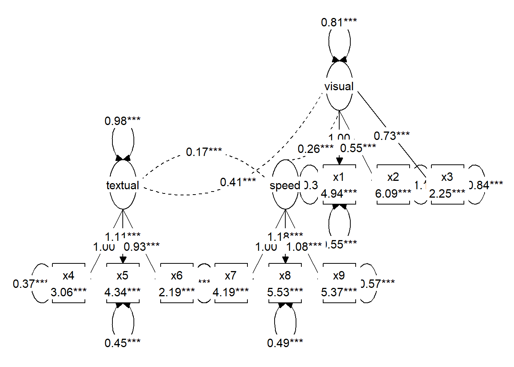
# Import with custom layout
ggsem(object = mx_graph, model = cfa_fit)
tidySEM object and OpenMx object.Use case: Predefined layouts (see above) and customized visual styling. tidySEM can also provide layout control while OpenMx handles statistical estimation.
Key Differences:
Approach 1 (OpenMx only):
ggsemgenerates automatic layoutQuick setup, minimal code
Less visual customization control
Approach 2 (OpenMx + tidySEM):
Custom layouts via
tidySEMEnhanced visual styling options
Preserves specific node positioning
Requires additional preparation step
7. Loading OpenMx Objects Created with umx Package
You can also visualize OpenMx objects created with umx package, which provides utility functions to handle OpenMx model objects, as shown below. This example is from the umx documentation website (https://tbates.github.io/):
library(umx)
library(OpenMx)
library(ggsem)
m1 = umxRAM("cars", data = mtcars, type="cov",
umxPath(c("wt", "disp"), to = "mpg"),
umxPath("wt", with = "disp"),
umxPath(var = c("wt", "disp", "mpg"))
)
Table: Parameter loadings for model 'cars'
| |name | Estimate| SE|type |
|:--|:--------------|---------:|--------:|:-------------|
|5 |disp_with_wt | 104.319| 27.773|Manifest Cov |
|1 |disp_to_mpg | -0.018| 0.009|Manifest path |
|2 |wt_to_mpg | -3.351| 1.108|Manifest path |
|3 |mpg_with_mpg | 7.709| 1.927|Residual |
|4 |disp_with_disp | 14880.775| 3720.082|Residual |
|6 |wt_with_wt | 0.927| 0.232|Residual |plot(m1) # plotted with umx packageggsem plots the final estimated values from OpenMx objects, while umx plots starting values, so the plotting outputs may look different.
ggsem(m1)
OpenMx object using the umx package.This is an example with customized colors of nodes, edges and loop arrows.
8. Loading Mplus Object
The code chunk below is directly from the documentation website of MplusAutomation (https://michaelhallquist.github.io/MplusAutomation/). You can only pre-laod Mplus model object by specifying the object parameter in ggsem().
Load Mplus models directly into ggsem using object argument:
library(MplusAutomation)
library(ggsem)
pathmodel <- mplusObject(
TITLE = "MplusAutomation Example - Path Model;",
MODEL = "
mpg ON hp;
wt ON disp;",
OUTPUT = "CINTERVAL;",
rdata = mtcars)
fit <- mplusModeler(pathmodel, modelout = "model1.inp", run = 1L)
class(fit)[1] "mplusObject" "list" # Import directly into ggsem
ggsem(object = fit)
Notice that the parameter estimate values from the figure match to those from the Mplus model:
library(texreg)
screenreg(fit, summaries = c("Observations", "CFI", "SRMR"), single.row=TRUE)
==================================
TITLE
----------------------------------
MPG<-HP -0.06 (0.01) ***
WT<-DISP 0.01 (0.00) ***
WT<->MPG -1.02 (0.38) **
MPG<-Intercepts 29.59 (1.53) ***
WT<-Intercepts 1.82 (0.18) ***
MPG<->MPG 14.04 (3.52) ***
WT<->WT 0.21 (0.06) ***
----------------------------------
Observations 32
CFI 0.87
SRMR 0.17
==================================
*** p < 0.001; ** p < 0.01; * p < 0.059. Loading semPlot Objects with Modifications from semptools Package
The semptools package can be used to create a customized layout for semPlot objects or modify other properties of the plot objects. These modifications from semptools can also be pre-loaded into ggsem(). Here, I directly use examples from the documentation of semptools (https://sfcheung.github.io/semptools/).
Annotations
Add statistical annotations like significance markers to semPlot objects:
library(lavaan)
library(semptools)Warning: package 'semptools' was built under R version 4.4.3library(semPlot)
mod_pa <-
'x1 ~~ x2
x3 ~ x1 + x2
x4 ~ x1 + x3
'
fit_pa <- lavaan::sem(mod_pa, pa_example)
parameterEstimates(fit_pa) lhs op rhs est se z pvalue ci.lower ci.upper
1 x1 ~~ x2 0.005 0.097 0.054 0.957 -0.186 0.196
2 x3 ~ x1 0.537 0.097 5.551 0.000 0.348 0.727
3 x3 ~ x2 0.376 0.093 4.050 0.000 0.194 0.557
4 x4 ~ x1 0.111 0.127 0.875 0.382 -0.138 0.361
5 x4 ~ x3 0.629 0.108 5.801 0.000 0.416 0.841
6 x3 ~~ x3 0.874 0.124 7.071 0.000 0.632 1.117
7 x4 ~~ x4 1.194 0.169 7.071 0.000 0.863 1.525
8 x1 ~~ x1 0.933 0.132 7.071 0.000 0.674 1.192
9 x2 ~~ x2 1.017 0.144 7.071 0.000 0.735 1.298m <- matrix(c("x1", NA, NA, NA,
NA, "x3", NA, "x4",
"x2", NA, NA, NA), byrow = TRUE, 3, 4)
p_pa <- semPaths(fit_pa, whatLabels = "est",
sizeMan = 10,
edge.label.cex = 1.15,
style = "ram",
nCharNodes = 0, nCharEdges = 0,
layout = m)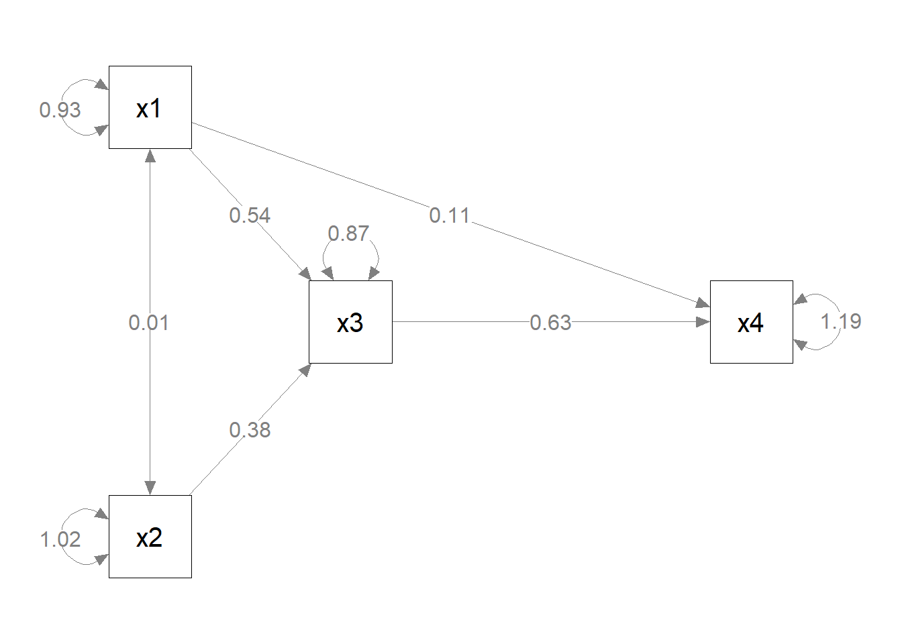
ggsem(object = p_pa)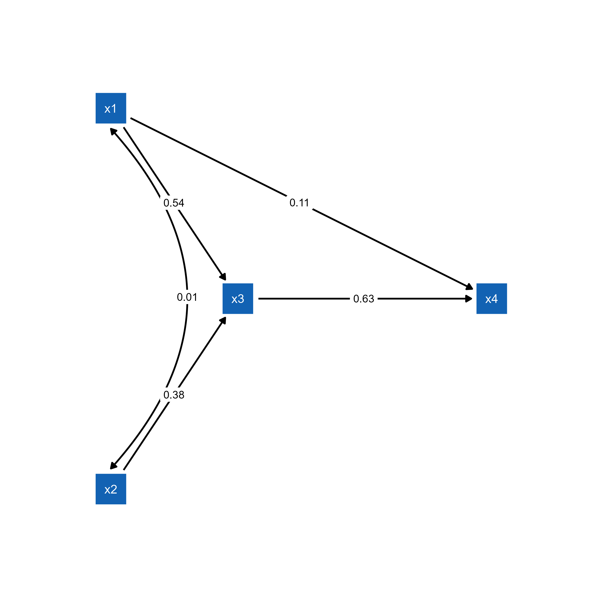
semPlot object.p_pa2 <- mark_sig(p_pa, fit_pa)
plot(p_pa2)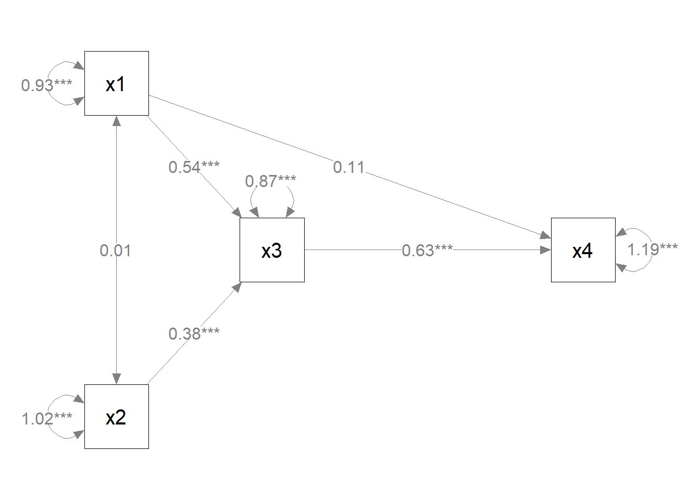
ggsem(object = p_pa2)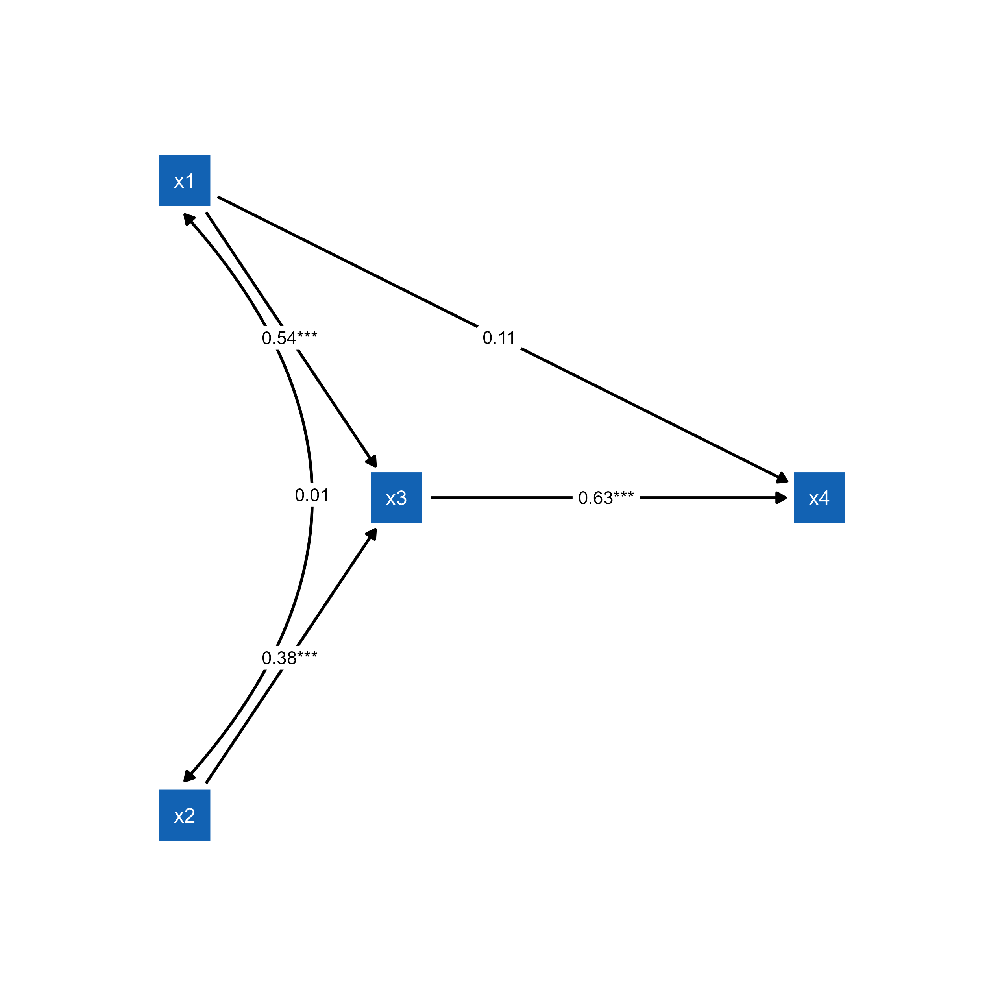
Customized Layout
Create advanced custom layouts using semptools layout functions:
mod <-
'f1 =~ x01 + x02 + x03
f2 =~ x04 + x05 + x06 + x07
f3 =~ x08 + x09 + x10
f4 =~ x11 + x12 + x13 + x14
f3 ~ f1 + f2
f4 ~ f1 + f3
'
fit <- lavaan::sem(mod, cfa_example)
p1 <- semPaths(fit, whatLabels="est",
sizeMan = 5,
node.width = 1,
edge.label.cex = .75,
style = "ram",
mar = c(5, 5, 5, 5)) # original layout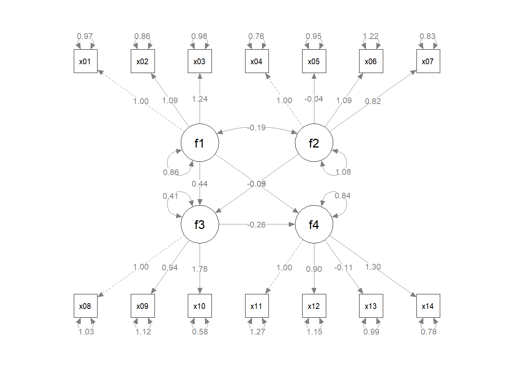
ggsem(p1, width = 35, height = 35)
semPlot object.Now, we modify the layout using functions from the semptools package.
indicator_order <- c("x04", "x05", "x06", "x07",
"x01", "x02", "x03",
"x11", "x12", "x13", "x14",
"x08", "x09", "x10")
indicator_factor <- c( "f2", "f2", "f2", "f2",
"f1", "f1", "f1",
"f4", "f4", "f4", "f4",
"f3", "f3", "f3")
factor_layout <- layout_matrix(f1 = c(1, 1),
f2 = c(3, 1),
f3 = c(2, 2),
f4 = c(2, 3))
factor_point_to <- layout_matrix(left = c(1, 1),
left = c(3, 1),
down = c(2, 2),
down = c(2, 3))
p2 <- set_sem_layout(p1,
indicator_order = indicator_order,
indicator_factor = indicator_factor,
factor_layout = factor_layout,
factor_point_to = factor_point_to)
plot(p2) # modified layout
ggsem(p2, width = 35, height = 35)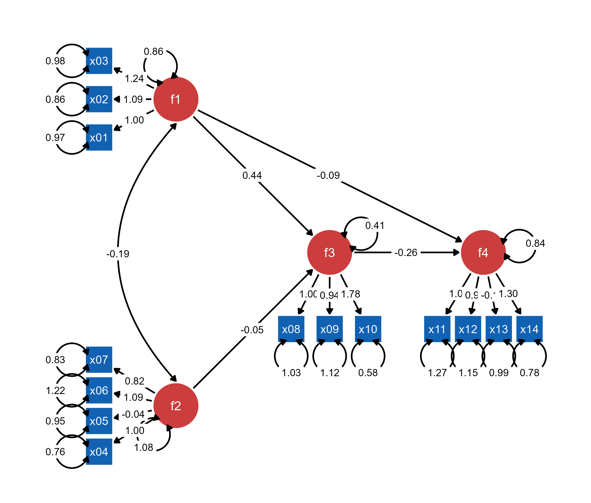
Most (if not all) semptools enhancements (layouts, annotations, styling) are preserved when loaded into ggsem, providing a transition from static customized plots to interactive exploration.